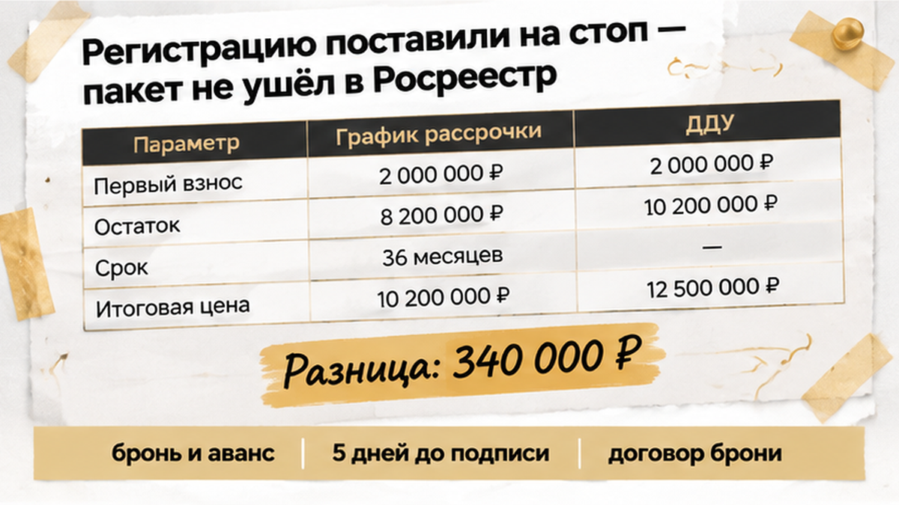
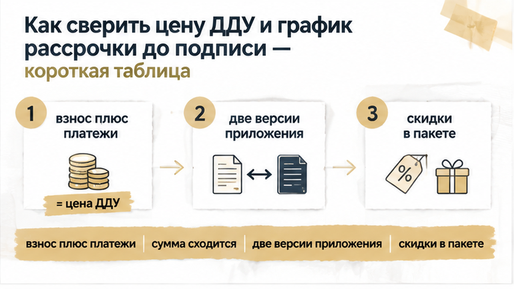

За пять дней до подписания ДДУ семья в тюменской новостройке нашла разницу в 340 000 ₽ — и остановила сделку до подачи документов на регистрацию. До этого в офисе продаж обсуждали удобный ежемесячный платёж, а не всю сумму, которая должна была сойтись в договоре и графике рассрочки. Бронь и аванс уже были оплачены, календарь подводил к подписанию, а ипотечные расчёты могли начаться в любой момент. Но когда ДДУ, приложение и платежи разложили рядом, стало ясно: в таком виде пакет дальше отправлять нельзя.
Разговор о рассрочке часто начинается с приятной цифры: «Вот такой платёж в месяц, вам подходит?»
Покупатель смотрит на сумму и прикидывает семейный бюджет. Менеджер показывает первоначальный взнос, несколько платежей по датам — всё выглядит понятно. Но у рассрочки есть одна неприятная особенность: она относится не к удобству ежемесячной суммы, а к полной цене квартиры по ДДУ.
В договоре должна быть указана итоговая цена. В приложении — первоначальный взнос и остальные обязательные платежи. Если менеджер называет одну цифру, а в таблице стоит другая последовательность сумм, ориентироваться нужно не на разговор и не на предварительный расчёт в Excel, а на согласованный пакет документов.
Обычный покупатель видит: «В месяц посильно». Профессионал сразу складывает всё до последней строки, включая финальный взнос. Именно там иногда и обнаруживается сумма, о которой в офисе продаж подробно не говорили.
Причину расхождения нельзя определить по одной таблице. В черновике могла остаться устная скидка, бонус из прайса мог не попасть в график, у менеджера могла открыться другая версия приложения. Иногда в расчёте выпадает крупный платёж в конце срока или появляется перерасчёт из-за площади и цены квадратного метра.
Поэтому фраза «это просто рассрочка» ничего не объясняет. Нужно понять, какая сумма согласована сторонами и одинаково ли она отражена во всех документах.
То же самое касается рекламных условий. Кладовая, отделка, скидка или другой бонус важны для покупателя только тогда, когда они попали в договорный пакет. Если условие осталось в переписке, прайсе или устном обещании, цена ДДУ от этого сама собой не меняется.
В другом разборе я показывал похожую ситуацию с обещанной отделкой: реклама и текст договора могут говорить о разных вещах. На словах квартира готова, а в документах нужного условия нет. С рассрочкой та же логика: важна не красивая цифра в презентации, а то, что покупатель действительно подписывает.
К моменту проверки семья уже внесла платную бронь и аванс. После этого легко почувствовать, что отступать поздно: деньги ушли, дата назначена, осталось только поставить подписи.
Но оплаченная бронь не исправляет противоречивый график. Она также не отменяет проверку цены ДДУ до следующих платежей.

Пять дней до плановой даты — это дедлайн конкретной сделки, а не установленный законом срок. Пакет ещё можно остановить, задать вопросы застройщику и попросить согласованную редакцию ДДУ вместе с приложением. Если документы уже зарегистрированы, исправление обычно потребует дополнительного соглашения и повторной регистрации.
Когда в сделке участвует ипотека, банк тоже смотрит на согласованный пакет. Он может не учесть в кредитной сумме деньги, которых нет в графике или которые не подтверждаются договором. Тогда разницу придётся закрывать собственными средствами либо снова обращаться к застройщику за новым комплектом документов.
Это не означает автоматический отказ банка. Но устный расчёт менеджера нельзя принимать за готовое финансовое решение. Банк и покупатель должны видеть одну и ту же цену, один первоначальный взнос и один полный график.
Отдельно стоит проверить условия возврата брони и аванса. Деньги не возвращаются автоматически только потому, что в графике обнаружилась ошибка. Порядок зависит от договора бронирования и связанных с ним условий: там могут быть сроки, основания для возврата и возможное удержание суммы.
Поэтому перед остановкой сделки нужно собрать рядом ДДУ, приложение, платёжные документы и договор брони. Только так можно понять, какие деньги уже внесены, что именно обещано вернуть и какой пакет застройщик предлагает подписать дальше.
За пять дней до планового подписания и подачи документов семья разложила перед собой ДДУ, приложение с графиком и расчёт первоначального взноса. До этого в офисе продаж говорили в основном об удобном ежемесячном платеже. Но когда сложили все строки, цифры не сошлись: график оказался примерно на 340 000 ₽ меньше цены, указанной в договоре.
В этот момент легко зацепиться за одну цифру и решить, что кто-то точно пытается взять лишние деньги. Но по документам причина ещё не была понятна. Расхождение могло появиться из-за неотражённой скидки, бонуса, другой версии таблицы, пропущенного финального платежа или перерасчёта площади и цены квадратного метра.
Поэтому сначала нужно установить, какая сумма действительно согласована сторонами и почему она не совпадает с графиком. Цена договора указывается в ДДУ, а порядок её оплаты — сразу или частями — должен быть согласован в самом договоре и приложениях к нему.
Для покупателя здесь важен не разговор с менеджером и не соседняя строка в прайсе. Если скидка, отделка, кладовая или другой бонус меняют итоговую сумму, это должно быть понятно из договорного пакета. Устное обещание или переписка сами по себе не превращают одну цену в другую.
Похожую проверку приходилось делать и в ситуации, когда накануне ДДУ изменилась ипотечная ставка и вырос платёж: цифры проверяли до оформления сделки. Опасность одна и та же: пересчёт можно заметить уже после подписания или после того, как деньги разошлись по платежам.
Здесь расхождение обнаружили до подачи пакета. Пять дней — не установленный законом срок, а время, которое оставалось до запланированной регистрации. Его хватило, чтобы не отправлять документы на автомате, а сначала добиться понятной арифметики.
После сверки регистрацию решили не запускать, пока цена договора и график не будут приведены к одному значению. Семья ждала согласованную редакцию ДДУ и приложения либо письменное объяснение, откуда взялась разница примерно в 340 000 ₽.
Это не означало, что квартиру решили бросить. Просто пакет не отправили в Росреестр, пока в нём оставались разные цифры. До регистрации ещё можно исправить документы без дополнительного соглашения и повторной подачи.
Но остановка регистрации сама по себе не возвращает уже внесённые деньги. Бронь и аванс регулируются отдельным договором. В нём нужно смотреть сроки, основания для возврата, возможное удержание суммы и последствия отказа от сделки.
Если в сделке участвует ипотека, важно также понять, какую сумму видит банк. Он может не учесть деньги, которых нет в согласованном графике или которые не подтверждаются договором. Тогда разницу придётся закрывать своими средствами либо снова согласовывать условия с застройщиком.
Даже если цена в ДДУ окажется правильной, график должен показывать полный остаток и даты всех платежей. Иначе покупатель рискует столкнуться с просрочкой и последствиями, предусмотренными договором, включая возможный односторонний отказ застройщика при установленных обстоятельствах.
Когда новая редакция документов будет готова, сверку нужно повторить: первоначальный взнос, промежуточные платежи, финальный взнос и отдельные доплаты должны складываться в цену ДДУ. Оставлять прежний график со словами «потом объясним» — плохая замена согласованному пакету.
В другом тюменском разборе семья тоже остановилась за несколько дней до ДДУ, когда цифры перестали сходиться с бюджетом: сделку не довели до регистрации, пока условия не согласовали.
Если график рассрочки не сходится с суммой в ДДУ на сотни тысяч рублей, подписывать документы или ждать новый пакет?

Берите не старый расчёт из переписки и не таблицу, которую показывали на первой встрече. Нужен именно тот пакет, который предлагают подписать сейчас: ДДУ, приложение с ценой и полный график рассрочки.
Главная арифметика простая: первоначальный взнос плюс все платежи, включая последний, должны дать цену договора. Если где-то появляется другая сумма, сначала разбираются с документами, а уже потом обсуждают дату регистрации.
| Что проверить | Что должно быть видно в документах |
|---|---|
| Цена договора | Одна итоговая сумма в ДДУ и приложении о цене. |
| Первоначальный взнос | Размер и срок внесения указаны в ДДУ или согласованном приложении. |
| График рассрочки | У каждого платежа есть сумма и дата, включая финальный взнос. |
| Арифметика | Первоначальный взнос плюс все платежи равны цене договора. |
| Скидки и бонусы | Они отражены в договорном пакете, а не только в рекламе или переписке. |
| Площадь и цена метра | Понятно, повлияли ли их изменения на итоговую сумму и где это закреплено. |
Обычный покупатель смотрит на строчку «платёж в месяц». Профи сначала ищет всю сумму до конца рассрочки. Удобная цифра может не показывать крупный финальный взнос, который и меняет всю картину.
Проверьте, не лежат ли рядом две версии приложения: одна распечатана для вас, другая открыта у менеджера. Если сумма менялась из-за площади или цены квадратного метра, это тоже должно быть понятно из согласованных документов, а не объясняться на словах.
Скидка, кладовая или отделка работают для покупателя только там, где они закреплены в договорном пакете. В одном из разборов по новостройкам Тюмени бонус выглядел убедительно в прайсе, но в договорной математике помещения не оказалось: цена обещания и содержание ДДУ — не одно и то же.
Лучше написать, а не выяснять всё в телефонном разговоре. Например: «Цена ДДУ составляет одну сумму, а первоначальный взнос и платежи по приложению дают другую. Какая сумма является окончательной и где отражена разница?»
Попросите прислать согласованную редакцию ДДУ и приложения о цене, полный график с датами и финальным платежом, а также письменное объяснение разницы примерно в 340 000 ₽. Если была скидка, бонус, перерасчёт площади или изменение цены квадратного метра, это должно быть прямо видно в документах.
Если готовится ипотека, отдельно уточните, какую сумму видит банк. Устный расчёт менеджера не заменяет согласованный пакет и не гарантирует, что недостающие деньги учтут в кредитной сумме.
Причиной расхождения может оказаться ошибка в таблице, разные версии приложения, пропущенный платёж или неотражённая скидка. Но выбирать «правильную» цифру на глаз нельзя. Цена ДДУ и порядок оплаты должны совпасть во всех документах.
До регистрации можно попросить остановить отправку пакета и дождаться новой редакции. После регистрации обычно потребуются дополнительное соглашение и повторная регистрация. А бронь или аванс живут по своим условиям: их возврат не возникает автоматически только потому, что в графике нашли ошибку.
Проект регулирования рассрочки, обсуждавшийся в 2026 году, действующим правом сегодня не является. Практическое правило уже есть: платить нужно по понятному графику, согласованному с ДДУ.
Если хотите разобрать пакет по новостройке в Тюмени до подписи, отправляйте вопрос Святославу Шакину, The Риэлтор:
Если цена в ДДУ и сумма платежей не сходятся, не подписывайте документы в надежде, что разницу объяснят позже. Остановите подачу, запросите согласованный пакет и проверьте всю арифметику до новых переводов. Здесь не нужно паниковать и отказываться от квартиры — нужно сначала выровнять цифры.